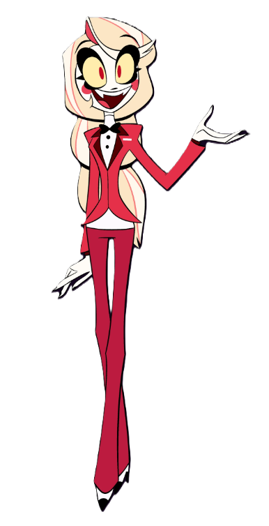
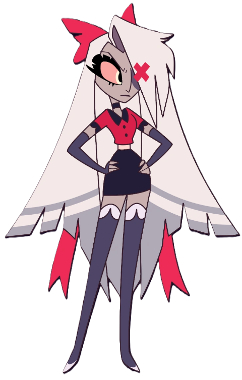
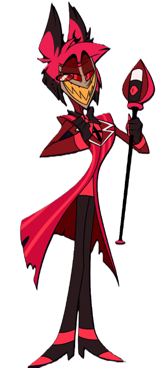
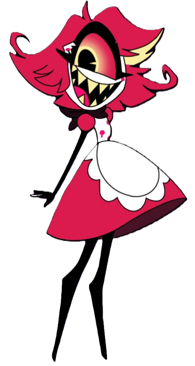
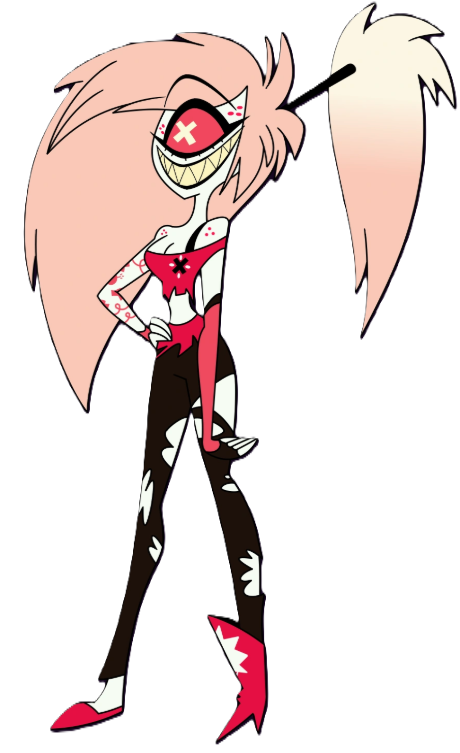
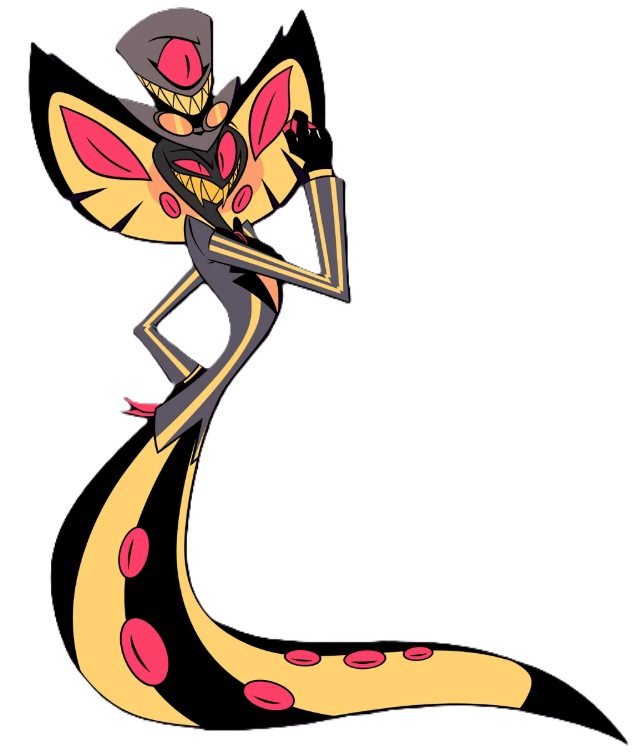
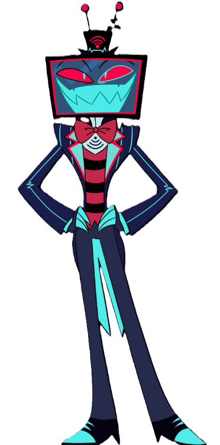
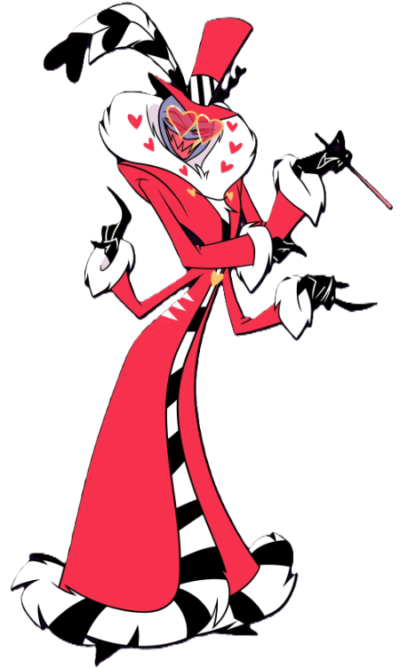
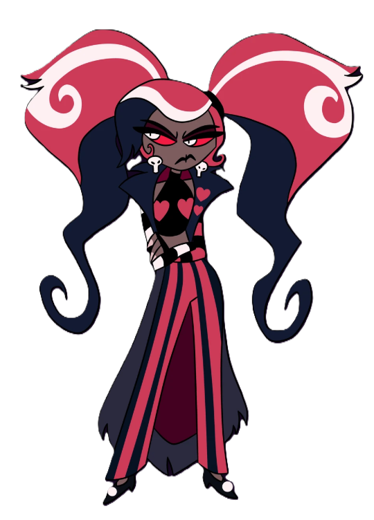

.˳·˖✶𓆩𓁺𓆪✶˖·˳. Hazbin Hotel .˳·˖✶𓆩𓁺𓆪✶˖·˳.

⛧ Vítejte na stránkách pro mou momentální hyperfixaci – seriál Hazbin Hotel!
⛧ Odehrává se převážně v Pekle. Peklo je v tomto světě rozděleno do 7 kruhů podle 7 smrtelných hříchů. Pro nás je důležitý kruh Pýchy, kde se nacházi naše postavy.
⛧ Hlavní postavou je Charlie Morningstar, dcera Lucifera, která se snaží ve svém Hazbin Hotelu rehabilitovat hříšné duše a dosáhnout toho, že se polepší a dostanou se do Nebe.
⛧ Je to opravdu super seriál! Přeci jen, kdo by neměl rád duše mrtvých hříšníků jako protagonisty? 😈
Hlavní kladné postavy:
|  |  |

|
|  |  |

|

|
 |  |
Hlavní záporáci (The Vees):
|  |  |  |